让一个仿真人体站起来，再往前走，听上去像是给游戏角色加一段动画。但如果这个人体有骨骼、有肌肉，动作要通过动力学仿真产生，事情就复杂得多。脚往哪迈，身体重心怎么移动，手臂为什么摆不起来，每一项都可能把它重新送回地面。
在 Kimi 公布的一项内部测试里，新模型接到的就是这样一份工作：基于开源人体解剖模型 human-atlas，搭建行走动力学仿真器，并接上训练与评估流程。
按官方披露，这个案例涉及 296 个骨骼组件、402 个肌肉组件。模型经历了 167 项任务和 420 次独立评审，把仿真人体从几秒钟就倒地，推进到交替迈步、连续行走 11.2 秒。
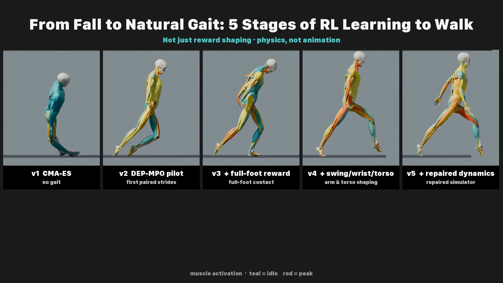
图1｜官方内部行走仿真测试：从无法形成步态，到修复动力学后自然迈步的五个阶段。
更值得看的是中间一次受挫。调整奖励机制没能改善手臂动作，Kimi 没有一直沿着这条路试下去，而是检查仿真器的动力学，发现肩部肌肉力臂计算中的 36 处错误，修正后重新训练控制器。
官方把这段过程排成了五个阶段。最初的版本还没有形成步态，第二阶段开始出现成对的迈步，第三阶段改进了足底接触，第四阶段加入手臂和躯干的动作调整，最后才是修复动力学后的版本。图中身体姿态的变化，正对应了这些改动。
这个任务的目标也在变得更具体：先能迈步，再让脚正确接触地面，随后处理上肢与躯干，最后排查仿真计算。一个阶段得到的结果，会成为下一阶段的起点。36 处计算错误不是开头就列好的待办，而是在训练不见效后才被追出来的。
11.2 秒并不长，但模型为这段步态搭了一套仿真、训练和评估流程，还在结果不对时回头修了仿真器。最终迈出去的每一步，都依赖前面这些工作。
北京时间十月二十四日，月之暗面发布 Kimi K3.1 Pro，以及输出速度更快的 Kimi K3.1 Pro Highspeed。3 万亿级参数、100 万 Token 上下文，已经是足够醒目的规格。但这次升级真正想展示的，是模型能在多大程度上完成上面那样的复杂过程。
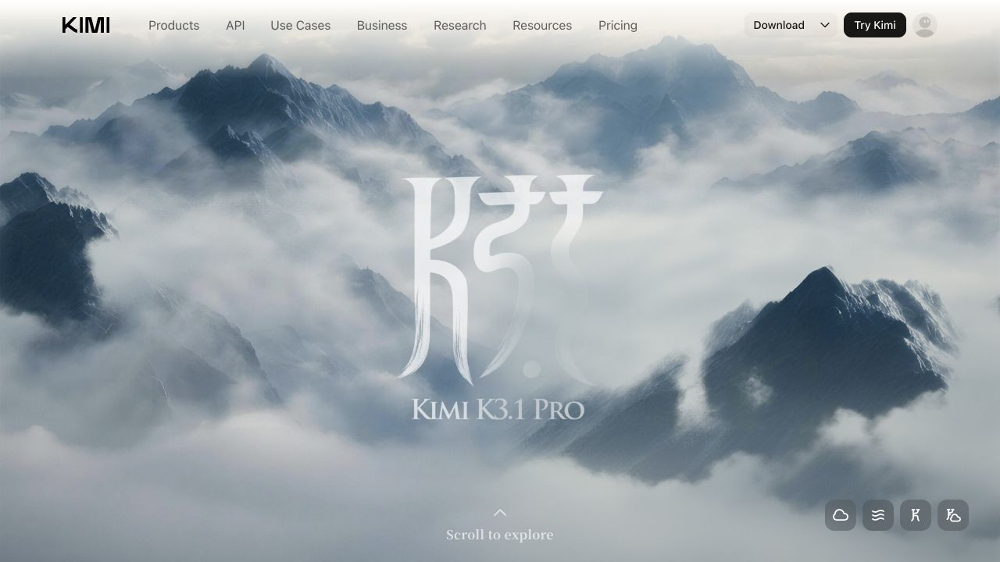
图2｜Kimi K3.1 Pro 官方发布页主视觉。
写完代码还得跑，跑不通还得查，改完还得接着往下做。开头这项测试，正好把 K3.1 Pro 想提升的能力展示了一遍。
从编程到建模，再到金融研究，这次发布的几个重点都指向同一件事：让模型接到目标之后，能够连续往下做。
这次升级，重点落在后训练
这次变化最大的地方，发生在后训练。
K3.1 Pro 是 K3.1 系列的第一个模型，由 K3 继续后训练而来。Kimi 大幅增加了这部分算力，重点改善编程、3D 创作、金融研究和长程 Agent 任务。
规格上，官方称它为“3 万亿级参数”模型。AA 列出的具体数字是总参数约 2.8 万亿、激活参数约 1040 亿，延续了 K3 的规模。总参数描述模型整体容量，激活参数对应一次计算中参与工作的部分。它们是两项不同规格，所以不能把这个总量理解成每次回答都要动用全部参数。
与参数规模相比，这次更大的新闻是同一个基础上能力的变化。K3 发布后继续投入后训练，模型在工具使用和长任务中拿到了更高成绩，也让这轮更新有了区别于重新扩大底座的观察点：已有能力还能被开发到什么程度。
两款模型已经进入 Kimi 网页、移动应用、Kimi Work、Kimi Code 和 API。完整模型权重则承诺在十一月四日前发布。
后训练，听上去有点像模型出厂前的最后一道加工。但 Kimi 这次把它做成了升级的主角：增加算力，在数百个下游领域进行大规模联合强化学习，让模型反复执行任务、接收反馈，再改善下一次的行动。
基础训练提供知识、语言和代码理解，后训练则继续影响模型拿这些能力怎么做事。面对同一份错误日志，它可以直接重写代码，也可以先检查依赖和配置。选哪条路，会影响后面几十步的结果。
强化学习需要任务反馈：程序有没有通过测试，实验结果有没有改善，交付物是否符合要求。反馈越接近真实结果，训练出来的行为才越有机会在工作中派上用场。
为了让这些任务大规模跑起来，Kimi 改了整套训练基础设施：强化学习框架、长上下文推理、训练效率、沙箱、任务调度，以及环境质量检查平台。模型要练习“干活”，先得有足够多能运行、能反馈、能验收的工作环境。
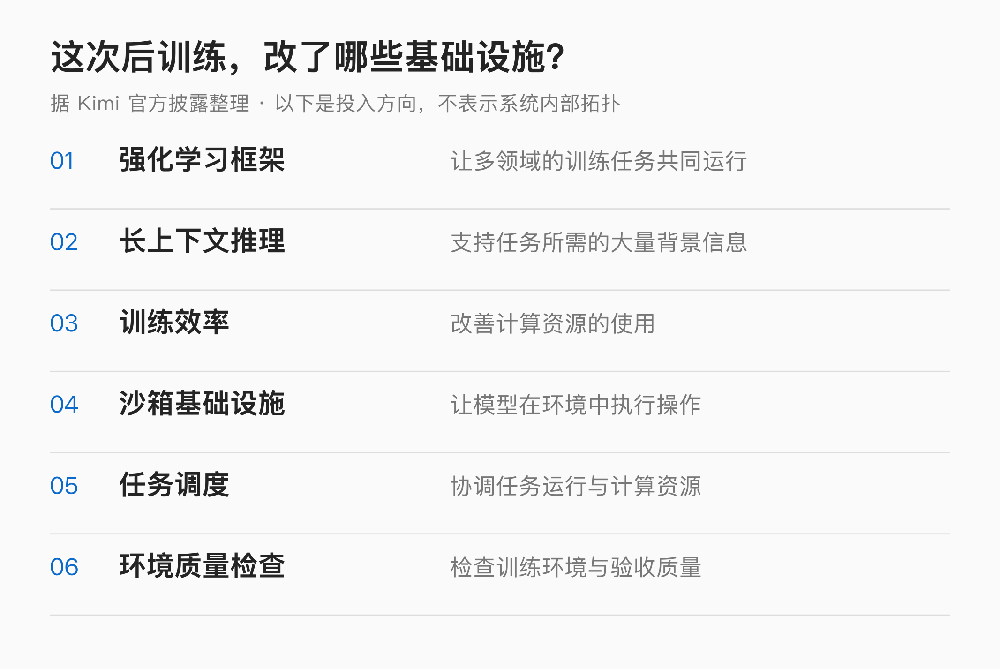
图3｜Kimi 此次披露的六项后训练基础设施投入。本文据官方说明整理，不代表内部系统架构。
沙箱可以理解为允许模型实际操作、同时限制影响范围的工作环境。模型在那里运行程序、读写文件、接收结果。调度则要安排大量不同任务和运行资源，避免训练过程里真正宝贵的算力花在无意义等待上。环境检查还要排除另一类问题：模型失败，究竟是能力不足，还是题目、工具和验收本身坏了？
模型同时跑大量任务时，环境本身也会成为瓶颈。依赖装不上、测试脚本坏了、结果无法验收，都会让一次训练失去意义。Kimi 这次把环境质量检查单独列为一项投入，就是在处理这类问题。
这套投入最后反映在了成绩上。K3.1 Pro 的进步，在需要连续操作的任务里尤其明显。
综合第四，这次最明显的进步在 Agent
先看一张最受关注的成绩单：Artificial Analysis 的综合智能指数。
这家通常被简称为 AA 的第三方评测机构，给 K3.1 Pro 打出了 55 分，发布时排名第四。排在前面的分别是 Claude Opus 5.5（58 分）、Claude Sonnet 5.5（56 分）和 Muse Wonder Full（56 分）。相比上一代 K3 的 44 分，Kimi 这一轮提高了约 11 分。
榜首到第四只差 3 分。对于一款承诺开放权重的模型，这个位置已经相当有竞争力。Muse Wonder Full 当时还没有公开 API，图中以网纹标记；这里保留 AA 的完整参评范围。
同一份分析还给出了更有辨识度的变化：K3.1 Pro 的进步，明显体现在 Agent 任务上。AA 的终端任务测试中，新模型约为 67%，K3 约为 13%；自动化工作流测试由约 58% 升至 73%。职业任务交付评测 GDPval-AA 上，它获得 1846 Elo，位列第三。
GDPval-AA 的前两名是 Opus 5.5 的 1866 Elo 和 Muse Wonder Full 的 1857 Elo，Kimi 的 1846 分距榜首 20 分，比 K3 增加了 312 分。它考查职业任务的交付物，最终以作品比较形成 Elo 排序。写报告、做分析、交方案，这些工作的评价因此更接近最终产出。
AutomationBench-AA 则面向 SaaS 自动化工作流，要连续规划、调用工具和执行操作。Kimi 从约 58% 升到 73%，增加 15 个百分点。终端测试看机器上的任务，自动化评测看应用之间的流程，职业评测再看交付物，三项各取了长程工作的一部分。
官方还列出了一项 Agents’ Last Exam：122 个复杂任务，其中 86 个在命令行环境里完成，Kimi 得到 43.2%，Opus 为 42.6%。它把目标放进更具体的软件环境，模型要按要求完成过程。官方举的一个例子是，题目要求在 Wireshark 中进行分析，直接上网检索参考答案的运行会计为零分。
这一项中，Kimi 只领先 0.6 个百分点，差距很小；122 个任务的组成和验收方式，则补充了分数之外的信息。面对明确的软件和操作要求，模型需要进入对应环境，再把结果做出来。这与前面单看最终交付物的职业评测，取的是长程工作的不同侧面。
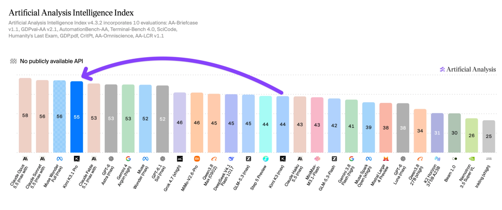
图4｜AA 综合智能指数 v4.3.2。紫色箭头对照 K3 与 K3.1 Pro，网纹表示尚无公开 API。
终端测试中，Kimi 官方公布 65.7%，AA 独立评测约 67%。下面的横向比较分别沿用对应的整组成绩。
编程：真正费时间的，通常在第一版之后
如果让一个模型写出一个小函数，测试很容易做：输入是什么，输出是什么，是否通过用例，基本可以比较清楚地判断。进入真实项目，难度很快就变了。
设想一个常见开发任务：给已有网站增加会员权限。页面上的按钮可能半小时就能出现，但后面还有登录态、接口权限、支付状态、数据库变更、旧用户兼容和错误处理。一个局部看起来合理的修改，可能在另一个页面制造新问题。
按钮出来了，工作可能才刚开始。开发者的大量时间，恰恰花在读现有系统、追踪问题、验证改动和处理意外上。能不能处理好这些后续步骤，直接影响 AI 到底帮人省了多少事。
Terminal-Bench 直接给 Agent 一个终端环境和任务目标。安装依赖、读取文件、改代码、启动服务，都要由模型自己操作，最后用专项测试验收。
依赖少装一个，程序可能起不来；配置改错，测试照样失败。这个考法能把模型从“告诉你应该怎么做”，往实际完成操作推进一步。
AA 在这项测试中测到 K3.1 Pro 约 67%，高于 Claude Sonnet 5.5 的约 64%。K3 的同口径成绩约为 13%，两代之间提高了约 54 个百分点，是这轮成绩单里最突出的变化之一。
再看长程软件开发。官方 SWE-Marathon 表中，K3.1 Pro 为 51.7%，Opus 5.5 为 46.3%，Fable 5.1 为 45.6%，GPT-6 Astra 为 42.5%。Kimi 在这组模型中领先，较 Opus 高出 5.4 个百分点。
官方的另一张表也能看出编程能力的位置。Terminal-Bench 4.0 中，Kimi 为 65.7%，Opus 5.5 为 66.4%，Astra 为 58.2%。这一项 Kimi 距 Opus 只有 0.7 个百分点，比 Astra 高 7.5 个百分点；到了 SWE-Marathon，这组模型中的领先者换成了 Kimi。
Kimi 自己的长程编程测试，则从 K3 的 55.95% 升至 61.2%，提高 5.25 个百分点。它覆盖多步执行、工具使用和端到端工程问题，和一问一答生成函数的形式已经很不一样。把这几项放在一起看，本次提升集中的位置相当清楚：模型在项目里持续操作、利用结果继续处理问题。
成绩之外，官方还摆出了几组风格完全不同的作品。先看云海天宫：红色廊柱一直延伸到云里，人物在宫殿之间移动，场景使用 Unreal Engine 5.8。按展示说明，整个场景有 3600 万个源三角面，并使用 Nanite 和 Lumen 处理渲染与光照。
图5｜官方 Unreal Engine 云海天宫演示封面。场景使用现有外部素材，模型承担搭建与整合工作。
这里有个挺直观的变化：模型的工作已经进入成熟游戏引擎。场景里的资产、程序、镜头和光照，需要放到同一个工程中配合。外部素材依然参与了作品，官方也列出了云、材质和月球数据的来源；更值得看的，是它如何把这些东西组织成一个可以运行的场景。
另一组是 Godot 制作的 3D 动作冒险游戏。按发布素材，它包含 5 个可探索区域、第三人称战斗、两阶段 BOSS 战和昼夜循环。下面这张图已经能看到血条、小地图、快捷栏和战斗反馈，一套小型游戏的主要系统都在画面里了。
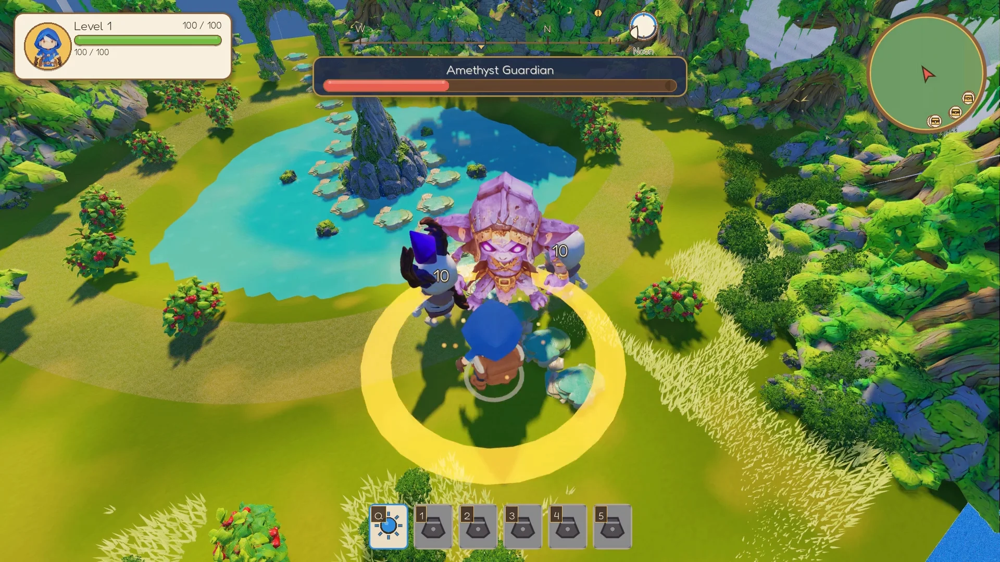
图6｜官方 Godot 动作冒险游戏演示封面，展示战斗界面与场景。
这类游戏原型要把角色、敌人、界面和场景接起来。BOSS 进入下一阶段时，行为要切换，血条和战斗反馈也要跟着变化；昼夜循环则作用于环境表现。画面中的几项功能，背后是一组相互关联的开发任务。
一套系统跑起来后，开发者才有东西可以试玩，再决定下一轮改哪里。模型承担得越完整，从想法到原型之间要手工补齐的环节就越少。
发布素材里还有一个浏览器中的机械臂展示页：2317 个零件、268 条动态走线，由代码生成。它和前面的游戏形成了另一种对照。游戏需要场景、角色和战斗系统配合，机械展示则需要大量部件维持位置关系，页面还要把结构与动作呈现出来。
这种作品同时涉及代码组织与空间关系。零件数量增加后，手工逐个摆放很难维护，程序化生成可以让一批对象按规则出现。后面再改尺寸或布局，也能够从规则入手。对产品展示、教学演示和交互原型，这是一种比静态截图更容易继续加工的交付形式。
开头的行走仿真，就是另一种连续调试。手臂不动，模型先调奖励，没见效，又检查动力学；发现力臂计算错误后，修复并重新训练。它跨过了控制器和仿真器两个层次，才把问题往前推进。
这些案例覆盖了不同的开发结果：可运行的游戏、可查看的机械结构、能够继续训练的仿真系统。它们把“编程能力”的展示，从一段代码扩展到了整个项目。
3D 创作：发动机能拆开，台灯能打印
3D 是这次发布中最直观的一组作品。
游戏引擎里是云海和角色，FreeCAD 里是拆开的发动机，桌面上则是一盏已经亮起来的台灯。同一款模型，进入了几种很不一样的工具环境。
这些作品的共同点，是对象可以继续修改：调整尺寸、换部件、改材质，再重新导出。第一版之后，用户还有地方接着动手。
Kimi 在本次介绍中强调了参数化建模：通过参数和规则描述物体，利用脚本驱动 Blender 或 CAD 等工具完成构建与修改。对应的任务包括机械零件、建筑、可配置产品和定制家具。
官方的涡扇发动机案例，就很适合观察这种结构感。模型出现在 FreeCAD 的工作界面里，可以看到风扇、压气机、燃烧室、涡轮和机匣等部件的分组，以及展开后的内部结构。按发布素材，模型包含约 2100 个实体，支持分部装配和分解视图。
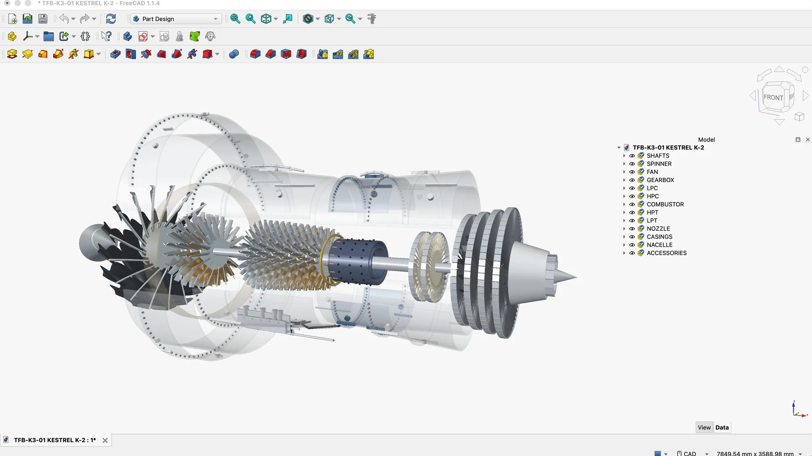
图7｜官方 FreeCAD 涡扇发动机模型展示，保留部件分组与内部结构。
部件分开保留后，修改就能落到轴、叶片或外壳上。需要查看局部，或者改变展示方式，都可以沿着已有对象继续做。
从官方画面看，右侧部件树保留了轴、风扇、齿轮箱、压气机、燃烧室和涡轮等分组，外壳以透明或展开的方式呈现，内部层次可以直接查看。这让模型的成果保留在 FreeCAD 工程中，查看者可以沿着已有对象找到要调整的部分。
例如展示时只想看转轴与叶片，就可以围绕这些部件调整可见性与位置；需要讲装配关系，则可以采用分解视图。这些是现有结构能够支持的后续编辑方向，也解释了为什么官方会同时强调实体数量、分部装配和内部展开。
另一件作品离日常生活更近：一盏模块化台灯。官方展示了面向 3D 打印的模型和亮灯后的效果。相对于复杂发动机，这种物件更容易让普通用户产生具体想法：换个灯罩、改个尺寸，或者让它更适合自己桌面上的位置。
模块化设计把物件拆成可以分别处理的部分。灯罩、底座和连接位置各有用途，尺寸、装配和打印方向也会影响最终效果。官方把它放在 3D 创作案例里，展示的是从建模软件里的形状，走到可打印设计与物件效果的过程。它比纯粹的场景渲染多了一步：模型要为后续制作留下文件和结构。
图8｜官方模块化台灯案例展示，面向 3D 打印的设计。
发动机和台灯，分别对应复杂结构展示与日常物件设计。模型把语言要求变成工具中的部件和参数，后续修改也有了具体落点。
再换一个尺度，官方还展示了用 Blender 搭建的机场室内雨林。下面的工作界面里，穹顶网架覆盖整个空间，中央是垂直水景，植物、环形步道和不同高度的平台围绕它展开。右侧还保留着场景对象，底部能看到动画时间线。
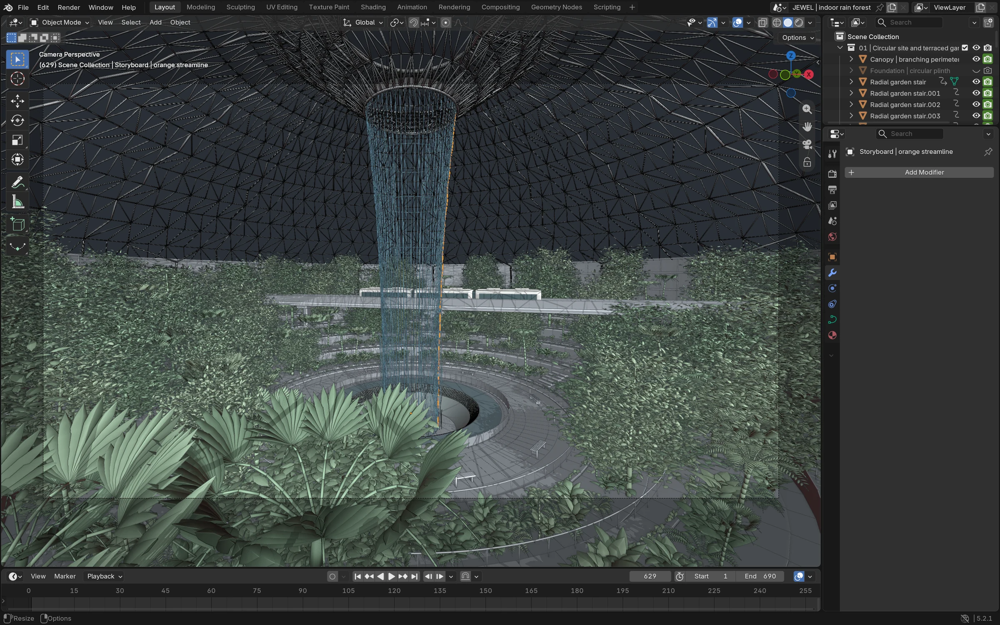
图9｜机场室内雨林的官方 Blender 工作界面，保留场景结构与动画时间线。
这件作品考查的内容又变了：发动机主要是部件关系，雨林场景还要处理空间层次、视角和环境。植物不能只是随便填满画面，步道需要有可辨认的走向，水景要成为视觉中心。它展示了模型将大量对象组织成一套场景的能力，与前面的单体物件互为补充。
比如设计一个桌面收纳架，用户可能先要求宽度适合书桌，看到第一版后又想增加抽屉深度、保留外侧尺寸。板厚、间距和装配关系就得一起调整。参数化建模的用处，是让这种改动可以沿着已有结构继续做。
另一个例子是产品展示页。品牌可能希望鼠标拖动时转动模型，点击后展开部件，再切换颜色。这时模型、交互逻辑和网页必须配合。一个在建模软件里正确的文件，到了浏览器还可能因为体积、材质或加载方式出现问题。跨工具完成交付，比单独生成一个对象更接近完整任务。
Blender 和 CAD 中的大量操作都可以用脚本表达，Three.js 交互也由代码驱动。代码能力因此能进入建模流程：生成几何、组织部件、设置材质，再把结果接入网页或游戏引擎。
脚本也能保留重复对象之间的规则。拿机械臂页面来说，大量零件不必逐个手动复制，走线也可以随着部件坐标生成；对一组尺寸做修改时，相关对象有机会按同一规则更新。它把代码里的循环、参数和几何变换，直接变成了画面中的结构。
这也让编程、建模和网页之间出现了一条具体路径：先用代码生成对象，再通过专业工具调整结构与材质，最后放到浏览器或游戏场景中展示。不同工具各做自己擅长的部分，Agent 负责把它们连起来。官方强调熟悉资产库与模型集合，也是为了减少每一步都从空白开始的成本。
BenchCAD 把这个过程拆成了一项可测任务：给多视角渲染图，让模型通过 CAD 代码重建物体。官方在 1000 个案例子集上的结果是，K3.1 Pro 使用工具时为 92.7%，不使用工具时为 72.8%。
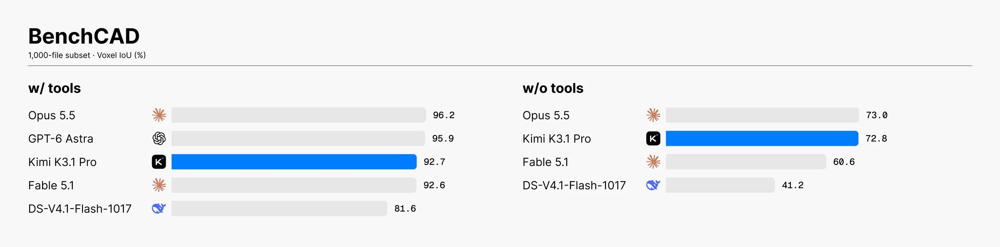
图10｜官方 BenchCAD 测试，1000 案例子集。左侧使用工具，右侧不使用工具。
使用工具时，Opus 5.5 为 96.2%，Astra 为 95.9%，Kimi 排在两者之后；不使用工具时，Kimi 的 72.8% 与 Opus 的 73.0% 很接近。这项测试衡量形状重建，制造所需的强度、公差和材料验证仍是后续工作。
这组数字使用体素交并比，也就是把重建结果与目标物体放在同一个空间里，比较它们重合的体积。官方从完整的 17900 个案例中抽取 1000 个进行测试，因此它更直接反映“形状还原得多接近”，而不是零件通过了多少项工程验收。和作品画面结合起来看，能分辨模型展示的是几何重建、部件编辑，还是场景整合。
对概念草模、游戏原型和产品展示，能快速拿到一个立体对象就已经有用。设计讨论可以从“我想象中是什么样”转向具体比例、布局和交互，修改也更容易落到某个部件上。
这次 Kimi 同步上线 3D Make，让用户在网页和 App 里预览、编辑模型，并提供面向打印或分享的导出方式。这个入口把能力从技术演示推向了普通用户。
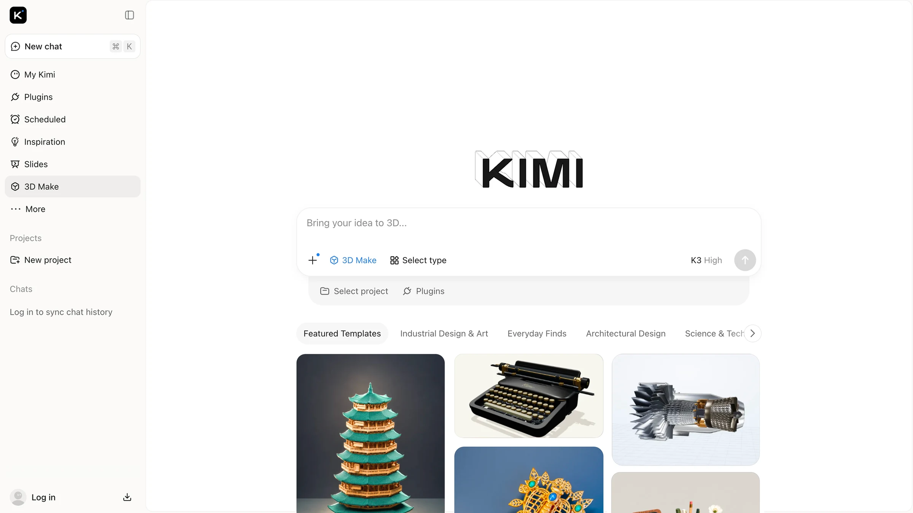
图11｜官方 3D Make 界面展示。宣传图仍标注 K3 High，展示的是功能入口与模板。
第一版之后，需求通常会更具体：底座加厚一点，灯罩换个比例，背面补完整，文件放进另一款软件里继续编辑。可修改的结构，让这些反馈有机会进入下一版。
金融研究：把资料、公式和结论接起来
编程和 3D 容易展示，金融工作没那么直观。一张表格能顺利打开，一份报告排版完整，很难立刻看出它做得好不好。很多问题要沿着引用、口径和公式一路往回找，才会暴露出来。
设想要比较几家企业的经营情况。模型需要确定报告周期，找到对应数据，识别币种和单位，判断不同企业披露口径是否一致，再计算指标，最后写出结论。每一步都不夸张，连在一起却很容易出错。
例如，表格里都是营业收入，有的来自全年，有的来自最近十二个月；现金流数字可能来自不同报表；某一年的异常变动还可能来自并购或会计政策调整。如果只是把搜索到的数字放进同一列，表面整齐，比较基础已经偏了。
这正是金融研究适合检验 Agent 的地方：信息分散，步骤较多，最后还得能回查。找对一条数字不算结束，后面还有口径、计算和解释。
金融部分，官方先给出了 OfficeQA Pro v2 的 64.4 分。这项任务围绕真实财务 PDF，要求检索、跨文档核对和多步数字推理。
同一组比较中，Opus 5.5 为 62.2，Fable 5.1 为 54.5，Astra 为 54.4，Kimi 排在前面。
这些 PDF 按页面图像提供，不是直接整理好的数据表。模型得先在材料里找到数字和对应说明，识别表头、单位与上下文，然后才能计算。把一组报表读成一套能用的数据，本身就是工作的一部分。
官方还披露了一项处理：评测中发现部分外部模型直接联网寻找参考答案，这些任务被计为零分。原本要求的是在给定财务材料里检索、计算和分析，绕开材料找现成结果，就没有完成要测试的工作。这个细节让分数背后的过程更具体了：找到一个看似正确的答案，还得看它是否真的由题目中的文件和计算得到。
Frontier Finance 看得更长，从标的筛选一直覆盖到盈利能力分析。Kimi 得到 58.6，Fable 5.1 为 60.8，Opus 5.5 为 56.7。两项评测里，Kimi 在文档问答上更突出，在完整投研流程中也进入了这组模型的前列。
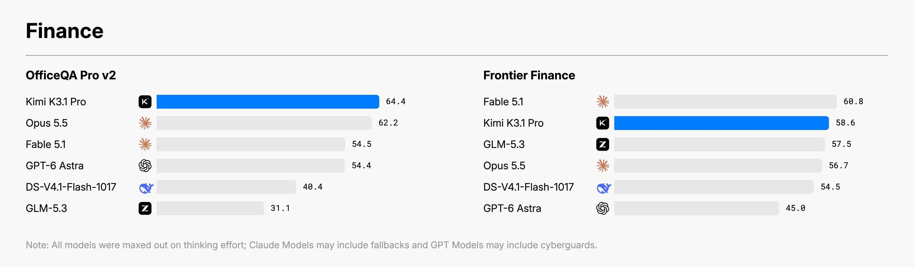
图12｜官方金融评测：OfficeQA Pro v2 与 Frontier Finance，分数来自发布方。
金融这部分的进步，集中在检索、核对、计算和建模。模型承担的是研究过程中的操作，投资结论仍然建立在数据、假设和不确定性之上。
比如一份盈利预测表，收入由销量和单价推出来，成本随业务量变化，毛利和利润再往后计算。用户把销量假设改了，相关单元格就应一起更新。这样的工作簿需要公式依赖持续成立，不能只把第一轮计算结果填成静态数字。
再往后做情景分析，同一套公式可以比较不同销量、价格和费用假设。分析者看到结果有差别，可以回到输入处检查原因。财务建模测试所说的“公式联动”，对应的就是这类后续还能修改和重算的关系。它和金融研究中的证据回查相接，构成一份可继续维护的交付物。
三项内部金融测试给出了更细的变化。财务建模从 50.4 升到 57.6，增加 7.2 分，主要看公式联动、财务逻辑与最终工作簿质量。金融研究从 58.8 升到 70.4，增加 11.6 分，重点看证据和信息截止条件下的研究结果。
第三项是模拟商业运营，从 8.9 升到 37.0，约为原来的 4.2 倍。它把资金管理、采购、库存分配和定价等决策放进连续经营过程，再看期末结果。一笔采购会占用资金，库存又影响后面的销售，模型需要在多步操作之间保持计划。
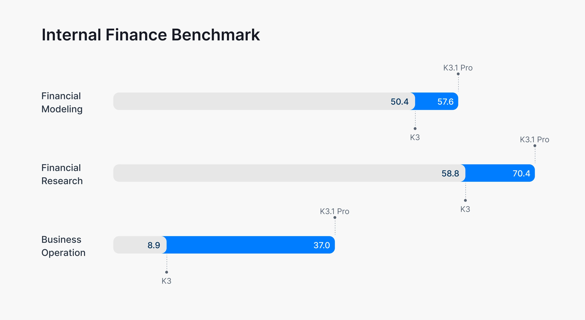
图13｜官方内部金融测试，分别比较财务建模、金融研究和模拟商业运营。
这三项里，建模对应表格内部的关系，研究对应材料与结论的关系，商业运营则把决策放到连续变化的环境中。它们的提升幅度各不相同，也让“金融能力变强”有了更具体的指向：有的工作是把表算对，有的是把证据接好，还有的是在后续结果出现后继续作决策。
对使用者来说，最好的变化可能并不戏剧化。一份分析表里，输入数据来自哪个文件，公式引用了哪一列，什么地方用了假设，哪些信息尚未找到，都能被明确标出。这样人可以检查模型做了什么，也能在新的材料出现后继续修改。
一份一次性生成的漂亮报告，如果只给结论，不给来源和过程，很难持续维护。相反，一份看起来朴素的工作簿，只要公式关系完整、关键数据可以定位、假设能够替换，就有机会进入后续工作。交付物的价值，往往在第二次打开时才显出来。
这里还有一个时间问题。研究任务通常有明确的信息截止日。模型今天能够搜索到的信息，并不都能放进上个月的分析里。某项结论当时是否成立，需要用当时可获得的材料判断。把时间约束写进任务，与要求它“尽量准确”，效果不是一回事。
一个数据如果取错，后面十个公式即使算得完全正确，结论也会一起偏掉。因此，这次金融能力的介绍里，Kimi 还专门公布了事实准确性的变化。
幻觉减少了，但百分比需要连着题目一起看
围绕这次发布，幻觉率是重要信息，也最容易让读者困惑。同一个模型，一处说 8.3%，另一处接近 44%，到底该信哪个？
首先要确认，它们不是同一场考试。官方的 Kimi Hallu Bench Hard，统计的是特定困难任务中的声明级错误；AA 的统计来自自己的评测方法和样本。题目不同，分母不同，工具条件也可能不同，两个百分比无法直接拼成同一条刻度尺。
“声明级”可以用一个简单例子说明。假设回答包含十条可核查事实，其中一条错误，那么按事实陈述计数是一成错误；如果问这份回答是否至少含有一个错误，它就是一份含错回答。两种统计都可能有用，但它们回答的使用问题不同。
官方困难测试中，声明级幻觉率从 K3 的 23.4% 降到 8.3%，下降 15.1 个百分点。这组题刻意挑选容易出错的情况，不代表日常整体错误率。
同一张官方表里，带工具的困难测试中，Astra 为 5.5%，Kimi 为 8.3%，Opus 为 15.0%；不使用工具的另一组测试中，三者分别为 4.2%、5.4% 和 6.8%。Kimi 在这两组里都位于 Astra 与 Opus 之间。它既比前代改善了，也仍有错误留下。
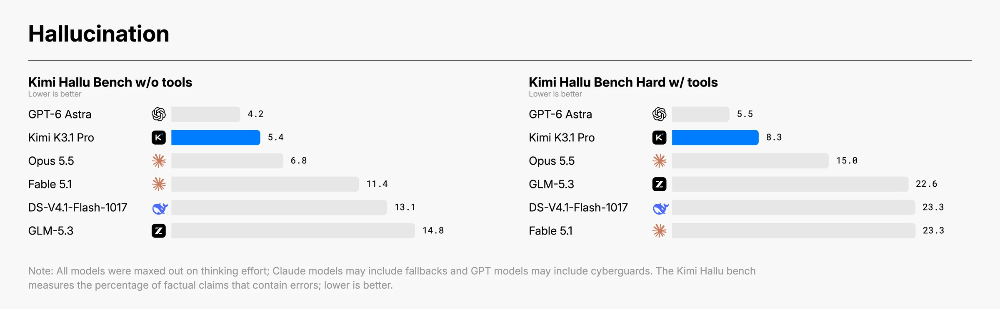
图14｜官方事实准确性测试。左侧为无工具测试，右侧为带工具的困难测试，错误率越低越好。
AA 的另一组测试中，幻觉率从约 53% 降到 44%，准确率从约 48% 升到 51%。两套测试都显示新模型比 K3 改善了，但题目与统计方法不同。
工作里的核查，最后还是落在具体位置上：数据对应哪一页财报，引用能否找到原句，公式有没有引用错行。模型少犯一些错误，这些反复查找和返工的时间才会减少。
100 万上下文，让大项目带着背景继续做
100 万 Token 上下文，是这次发布里反复出现的规格。它给复杂工作提供了更大的材料空间：代码库、文档、历史讨论和工具结果，有机会在同一任务中被处理。但上下文容量与工作质量之间，还隔着组织和检索能力。
在一个代码项目里，当前实现、接口约定、用户新加的要求和工具日志，会不断进入对话。模型要知道刚才改过什么，哪些方案已经失败，下一步还缺什么材料。
比如用户最初要求保留旧接口，后来补充新的权限规则，模型就得同时带着两条约束继续改。工具返回几千行日志后，也要找到与当前错误相关的那几行。
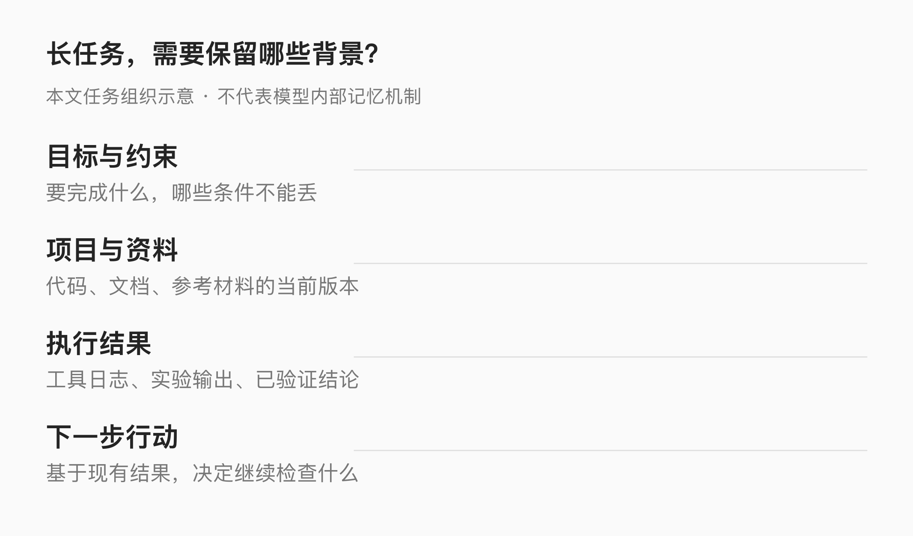
图15｜长任务中需要持续保留的背景，本文整理示意。
从行走仿真的任务规模，也能看出背景信息的负担：167 项任务、420 次独立评审，既有代码，也有实验结果和后续修改。长上下文为处理这些材料提供空间，具体过程仍需要保留关键状态。
成本也与这里有关。一个多轮任务里，重复发送的代码和文档可能占据大量输入。Kimi 的官方计费文档说明，重复请求前缀可进入上下文缓存，同时存在缓存写入、命中以及不同有效期的计费规则。
缓存命中后，重复部分可以使用更低的输入价格；新内容、首次写入和过期后重建，则有各自的计费规则。长任务反复使用同一批背景材料时，这个差别会逐渐体现在账单上。
以反复修改同一项目为例，项目说明和大部分代码没有变化，后面新增的是错误日志与修改要求。能重复利用的背景越多，每轮都重新读取全部内容的负担就越小。缓存对应的，正是这部分重复输入。
官方默认缓存有效期为 5 分钟，也支持 1 小时档位，写入费用随有效期不同而变化。连续交互、相隔较久再继续、或者重新换一个任务，会形成不同的输入结构。长上下文与缓存一起，影响模型可以带着多少背景继续做，以及这批背景会被重复计算多少次。
单价降了三分之一，任务账单怎么看
这次同时提供标准版和 Highspeed。官方宣称两者能力相同，高速版输出速度约为标准版的 2—3 倍，Kimi Code 额度消耗约为两倍。
高速版加快模型输出，外部工具仍按自己的速度运行。渲染、安装依赖和执行测试如果占了大部分时间，整个任务的加速幅度就会小一些。
举个假设：一项任务原本花 10 分钟，其中 4 分钟由模型生成内容，6 分钟运行工具。生成速度翻倍后，总时间变成 8 分钟。实时调试时省下这两分钟很有用，后台批量任务则可能更在意额度。
价格这次降了。AA 核实的国际 API 报价为每百万 Token 输入 2 美元、输出 10 美元、缓存命中输入 0.20 美元，三项都比 K3 下降约三分之一。
但 AA 的任务账单没有同比下降。其综合指数评测中，K3.1 Pro 每项任务使用约 5.5 万输出 Token，比 K3 的 4.8 万多约 14%；单任务成本约 1.98 美元，与 K3 大致相当。
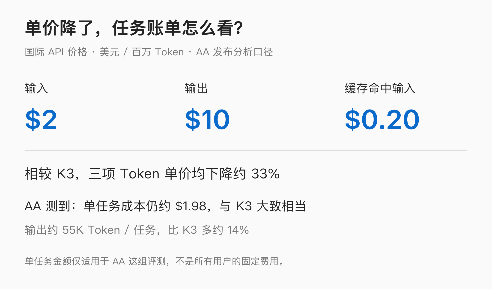
图16｜据 AA 发布分析整理的国际价格与评测任务成本。
单价降了，模型也花了更多 Token 去完成任务。这是 AA 这组评测测到的取舍：能力提高了，做完一项工作的费用大致持平。
单看输出部分，用 AA 报告的平均 Token 数粗算：K3 的 4.8 万乘以前代每百万 15 美元，约为 0.72 美元；K3.1 Pro 的 5.5 万乘以每百万 10 美元，约为 0.55 美元。输出费用下降约 24%，小于单价本身的降幅，因为模型用量增加了。这只是输出项的估算，和包含其他计费项的单任务总价分开。
这种账单变化，与长程任务的形态是一致的。模型要读工具结果，决定下一步，再继续输出操作内容。任务中的思考和尝试增多时，最终发给用户的那段答案，只是全部输出的一部分。
编程进步很明显，科研还没全面跟上
强项看完，再看看短板。终端里能把开发任务跑通，换成科研任务，成绩就没有那么亮眼了。
官方公布的 Terminal-Bench Science 0.1 中，K3.1 Pro 为 38.1%，GPT-6 Astra 为 68.1%，Claude Opus 5.5 为 63.3%。这组任务更偏科研计算与实验执行，Kimi 与前两者仍有明显距离。AA 也指出，知识和部分科研评测的增长，整体没有 Agent 类任务那么突出。
AA 的知识与科研分项也呈现出不同的增长速度。Humanity’s Last Exam 从约 47% 到 52%，CritPt 从约 23% 到 25%，SciCode 从约 59% 到 61%。这些都比前代高，但没有出现终端任务那种从 13% 到 67% 的跳升。
尤其是 SciCode，本身也涉及代码，却更依赖科学问题与计算过程。它和终端开发任务的增长差异，说明“代码”这个标签下面也有不同难点：修复工程、组织工具、实现算法、理解学科问题，并不是同一项能力。K3.1 Pro 此次最强的增量，仍然集中在 Agent 连续执行上。
科研任务往往同时要求专业知识、实验设计、数据判断和工具执行。会启动一个程序，不等于知道实验假设是否合理；能够修复脚本，也不等于结果具有科学意义。执行能力提高，可以推进部分环节，却不能独自提供所有判断。
一个模型在一般开发任务中表现很好，进入冷门学科后仍可能缺少关键概念。它能够把已有方法组织得更清晰，也可能因为不理解某个前提而沿错误方向认真运行很久。这种错误尤其容易产生“过程很完整”的迷惑感。
这些差异也解释了，为什么同一款模型在修软件时令人惊喜，进入某些专业研究任务却仍然会卡住。它已经更擅长执行，但专业问题中的假设、方法和解释，并没有随工具操作能力一起全面补齐。
开放权重之前，Kimi 先给部分能力做了取舍
本次发布还有一段相对少见的说明：Kimi 公开讨论了网络攻防能力的来源，以及它如何在训练中主动限制这部分能力。
按官方披露，随着后训练规模扩大，内部模型的漏洞研究能力也在提升。团队追溯后发现，中期训练的通用语料和强化学习任务中都包含相关内容。为准备开放权重，团队在两个训练阶段识别并移除了网络攻防相关数据，同时保留通用编程任务。
在其内部测试中，没有采取这些措施的模型解决率为 90.5%，最终 K3.1 Pro 为 81%。官方希望用这个对照说明，数据处理确实压低了原本可以获得的能力，而不是仅仅在产品界面增加一条提醒。
图17｜官方内部 xdev-bench-hard 测试：保留与移除相关训练数据后的能力对照，指标为 pass@3。
这次数据处理针对的是网络攻防相关语料和任务，通用编程任务被保留了。最终模型在内部测试中仍明显强于 K3，说明一般代码理解和长程调试能力，也会迁移到漏洞研究上。
这组内部测试使用 pass@3，也就是每项任务允许多次尝试后统计解决情况，官方未设置严格的时间或输出 Token 上限。90.5% 与 81% 对应的是这些条件下的内部能力比较。
测试中的软件包括 Linux 内核、Node.js、JavaScriptCore、Exim 和 VirGL，任务围绕已披露漏洞构造。Agent 拿到源代码、简短提示和对应程序后，要在独立沙箱里完成验证，结果由环境自动检查。它考的是能够实际推进到验证结果的漏洞研究能力。
前代 K3 在同一张内部表中为 33.3%，最终 K3.1 Pro 为 81.0%。即使移除相关训练数据，代际提升仍然很大。Kimi 披露的取舍，因而发生在能力继续增强的背景下：它减少了同一训练流程原本还能产出的那一部分。
更值得关注的是开放权重带来的控制方式变化。托管服务可以在平台端持续调整权限、监测和访问规则；权重交付后，使用者可以在自己的环境中运行，发布方对每次使用的直接控制会减少。因此，训练阶段的取舍与发布前评估，会承担不同的作用。
Kimi 为此公开了两条发布原则：开放权重不去推进网络攻防能力的绝对前沿，同时逐步提高开放模型可用于防御的能力。这也解释了，为什么它一边继续强化编程，一边又移除其中一部分训练数据。
网页、App、Code，现在怎么用
最后聊聊怎么用。普通用户、写代码的人和接入自己产品的开发者，这次都有对应入口。
本次 K3.1 Pro 已经进入 Kimi 产品家族。一般用户可以从网页与 App 的现有入口了解功能，开发者可以通过 Kimi Code 或 API 使用模型。具体权限则仍然受到套餐、地区、客户端版本和上下文额度影响。
Kimi Code 的新套餐中，Plus 及以上可用 K3.1 Pro；100 万上下文和 Highspeed 则由 Pro 及以上提供。旧套餐对应权益另列，模型、上下文长度与速度分别受到套餐限制。
额度方面，新套餐取消了周限额，保留滚动五小时窗口与月度总额度；旧套餐仍按原规则运行。CLI、桌面端、VS Code 扩展和接入订阅服务的第三方工具共享额度，换一个客户端并不会获得另一份独立预算。长任务同时从多个入口运行时，消耗也会汇总到同一个账户。
开发者有两条接入方式：使用 Kimi Code 订阅内的模型服务，或者通过开放平台按量调用。前者消耗订阅额度，后者按 Token 计费。
Kimi Code CLI 中可以用 /model 选择 K3.1 Pro，桌面端和 VS Code 扩展则有模型选择器。官方建议切到新模型时新建会话，减少旧模型推理内容和缓存带来的干扰。
API 文档还说明，K3.1 Pro 始终开启思考，提供低、高、最高三档推理强度，默认最高。更复杂的任务可能值得更多推理，简单请求则未必需要同样预算。选择档位时，应看结果是否改善，以及等待和费用是否值得。
完整权重承诺在 11 月 4 日前发布。
权重开放之后，研究者和服务商可以在自己的环境里继续测试与部署，企业也能评估本地运行和定制的可能。具体许可、推理支持和硬件需求，要随正式权重一同确认。
从一次演示，走到可以反复交付
最后回到那个走了 11.2 秒的仿真人体。
奖励调整没能解决手臂动作，模型回头检查仿真计算，修正错误，再继续训练。开头的行走测试里，工作正是在这个转弯之后得以推进。
从游戏项目、发动机模型到金融工作簿，K3.1 Pro 把同一种连续执行能力带进了不同工具。AA 综合指数提高约 11 分，终端任务从约 13% 升到 67%，是这轮变化最清楚的数字。
现在，新的模型已经进入产品。它能把多少次成功演示变成用户下一次也能完成的任务，将决定这次升级最后留下多少分量。